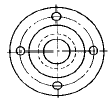
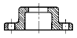
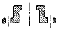
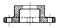
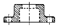

제선기능사 (2002-04-07 기출문제)
1과목: 금속재료일반
1. 재결정온도가 가장 낮은 것은?
- Au
- Sn
- Cu
- Ni
(정답률: 76%)

2. 금속간 화합물을 바르게 설명한 것은?
- 일반적으로 복잡한 결정구조를 갖는다.
- 변형하기 쉽고 인성이 크다.
- 용해 상태에서 존재하며 전기저항이 작고 비금속 성질이 약하다.
- 원자량의 정수비로는 절대 결합되지 않는다.
(정답률: 85%)
3. 가공으로 내부변형을 일으킨 결정립이 그 형태대로 내부 변형을 해방하여 가는 과정은?
- 재결정
- 회복
- 결정핵성장
- 시효완료
(정답률: 76%)
4. 알파(α)철의 자기변태점은?
- A1
- A2
- A3
- A4
(정답률: 88%)
5. 금속의 결정격자에 속하지 않는 기호는?
- FCC
- LDN
- BCC
- CPH
(정답률: 87%)
6. 18-8 스테인리스강에 해당되지 않는 것은?
- Cr 18%-Ni 8% 이다.
- 내식성이 우수하다.
- 상자성체이다.
- 오스테나이트계이다.
(정답률: 86%)
7. 탄소가 가장 많이 함유되어 있는 조직은?
- 페라이트
- 펄라이트
- 오스테나이트
- 시멘타이트
(정답률: 83%)
8. Fe-C 평형상태도에서 γ고용체가 최대로 함유할 수 있는 탄소의 양은 약 어느정도인가?
- 0.02%
- 0.86%
- 2.0%
- 4.3%
(정답률: 70%)
9. 함석판은 얇은 강판에 무엇을 도금한 것인가?
- 니켈
- 크롬
- 아연
- 주석
(정답률: 66%)
10. 탄소강에서 나타나는 상온메짐의 원인이 되는 주 원소는?
- 인
- 황
- 망간
- 규소
(정답률: 76%)
11. 청동합금에서 탄성, 내마모성, 내식성을 향상시키고 유동성을 좋게하는 원소는?
- P
- Ni
- Zn
- Mn
(정답률: 56%)
12. 네이벌(Naval Brass)황동이란?
- 6 : 4 황동에 주석을 약 0.75% 정도 넣은 것
- 7 : 3 황동에 망간을 약 2.85% 정도 넣은 것
- 7 : 3 황동에 납을 약 3.55% 정도 넣은 것
- 6 : 4 황동에 철을 약 4.95% 정도 넣은 것
(정답률: 83%)
13. 양은(양백)의 설명 중 맞지 않는 것은?
- Cu-Zn-Ni 계의 황동이다.
- 탄성재료에 사용된다.
- 내식성이 불량하다.
- 일반전기저항체로 이용된다.
(정답률: 83%)
14. 공작기계용 절삭공구재료로써 가장 많이 사용되는 것은?
- 연강
- 회주철
- 저탄소강
- 고속도강
(정답률: 80%)
15. 스프링강(spring steel)의 기호는?
- STS
- SPS
- SKH
- STD
(정답률: 89%)
2과목: 금속제도
16. 도면에서 단위 기호를 생략하고 치수 숫자만 기입할 수 있는 단위는?
- inch
- m
- cm
- mm
(정답률: 96%)
17. 물체의 일부 생략 또는 파단면의 경계를 나타내는 선으로 자를 쓰지 않고 손으로 자유로이 긋는 선은?
- 가상선
- 지시선
- 절단선
- 파단선
(정답률: 79%)
18. 다음 중 가는 실선을 사용하는 선이 아닌 것은?
- 지시선
- 치수선
- 치수보조선
- 외형선
(정답률: 91%)
19. 물체의 보이지 않는 곳의 형상을 나타낼 때 사용하는 선은?
- 실선
- 파선
- 일점 쇄선
- 이점 쇄선
(정답률: 69%)
20. 정투상법에서 물체의 모양과 기능을 가장 뚜렷하게 나타내는 면을 어떤 투상도로 선택하는가?
- 평면도
- 정면도
- 측면도
- 배면도
(정답률: 89%)
21. 물체의 여러면을 동시에 투상하여 입체적으로 도시하는 투상법이 아닌 것은?
- 등각투상도법
- 사투상도법
- 정투상도법
- 투시도법
(정답률: 65%)
22. 치수 숫자와 같이 사용된 기호 t 가 뜻하는 것은?
- 두께
- 반지름
- 지름
- 모떼기
(정답률: 94%)
23. 도면의 표면거칠기 표시에서 6.3 S 가 뜻하는 것은?
- 최대높이거칠기 6.3μm
- 중심선평균거칠기 6.3μm
- 10점평균거칠기 6.3μm
- 최소높이거칠기 6.3μm
(정답률: 71%)
24. 재료기호 "SS400"(구기호:SS41)의 400 이 뜻하는 것은?
- 최고인장강도
- 최저인장강도
- 탄소함유량
- 두께치수
(정답률: 84%)
25. 유니파이 가는나사의 호칭 기호는?
- M
- PT
- UNF
- PF
(정답률: 95%)
26. 최대허용치수와 최소허용치수의 차는?
- 위치수허용차
- 아래치수허용차
- 치수공차
- 기준치수
(정답률: 85%)
27. 아래 오른쪽 그림과 같은 물체의 온단면도는?





(정답률: 72%)
28. 고로 노내 조업 분위기는?
- 산화성
- 환원성
- 중성
- 산화,환원,중성의 복합분위기
(정답률: 85%)
29. 고로의 생산성 향상이 아닌 것은?
- 코크스 회분의 저하
- 코크스 비 상승
- 입도의 균일화
- 코크스 강도의 향상
(정답률: 73%)
30. 용광로에 사용하는 코크스의 특징이 잘못된 것은?
- 다공질(기공률 40% 이상)이어야 한다.
- 회분은 낮을수록 좋다.
- 적당한 반응성을 가져야 한다.
- P 및 S 분이 높아야 한다.
(정답률: 83%)
3과목: 제선법
31. 고로시멘트의 특징 중 틀린 것은?
- 내산성이 우수하다.
- 열에 강하다.
- 오랫동안 강도가 크다.
- 내화성이 우수하다.
(정답률: 58%)
32. 고로수리를 위하여 일시적으로 송풍을 중지시키는 것은?
- 행깅
- 점화
- 소화
- 휴풍
(정답률: 87%)
33. 제강공장으로 부터 용선중 망간 [Mn]% 를 현재의 0.4%에서 0.55% 까지 높여달라는 요청이 왔다. 이를 위해 용광로에 장입해야 할 망간광석량은? (단, 1ch 당 선철 생성량 : 65000 ㎏/ch용광로내에서의 망간 환원율 : 70%, 망간광 중 망간 함량 : 31%)
- Ch당 약 449㎏ 증가
- Ch당 약 449㎏ 감소
- Ch당 약 900㎏ 증가
- Ch당 약 900㎏ 감소
(정답률: 62%)
34. 습식 청정기가 아닌 것은?
- 다이센 청정기
- 스프레이 와셔
- 허어들 와셔
- 여과식 가스 청정기
(정답률: 87%)
35. 코크스 제조 공정의 순서가 옳은 것은?
- Mixer-Coal bunker-Coke oven-Surge bin
- Coal bunker-Coke oven-Quenching tower-Coke wharf
- Crusher-Surge bin-Mixer-Coal bunker
- Mixer-Coal bunker-Coke wharf-Coke oven
(정답률: 74%)
36. 선철의 분류 중 파면에 의한 분류가 아닌 것은?
- 목탄 선철
- 백 선철
- 반 선철
- 회 선철
(정답률: 81%)
37. 가스차단 밸브로 가스를 가장 완전하게 차단할 수 있는 밸브는?
- 워터 시링 밸브(water-sealing valve)
- 볼 밸브(ball valve)
- 나이프 밸브(knife valve)
- 온 오프 밸브(on-off valve)
(정답률: 76%)
38. 고로과정이 일반 야금 과정과 다른점 중 틀린 것은?
- 고로는 기화에서 소화까지 장시간 연속적으로 가동 한다.
- 고로내 가열을 받는 장입물과 고온 가스사이에 역류가 일어나 열효율이 크다.
- 선철과 슬랙은 고체 상태로 얻어지고 비중차로써 분리한다.
- 로내에서 탄소는 연료 및 환원제로 이용된다.
(정답률: 59%)
39. 용선을 고로에서 제강의 전로까지 옮기는데 이용되는 설비에 해당되지 않는 것은?
- Ladle
- Soaking pit
- Torpedo Car
- Mixer
(정답률: 60%)
40. 수송물을 저장하는 곳은?
- 텐션(tension)
- 플레임(frame)
- 호퍼(hopper)
- 벨트(belt)
(정답률: 85%)
41. 불순물 제거에 가장 적합한 것은?
- 스트레이너(strainer)
- 오리피스 메타(orifice meter)
- 벤츄리 메타(venturi meter)
- 로타메타(rota meter)
(정답률: 74%)
42. 용광로 출선구 개공기 신호 중 한 손을 출선구쪽을 가리키고 호르라기를 짧게 끊어서 2회씩 반복하여 불어줄 때 크레인 운전자의 동작은?
- 전진동작
- 정지
- 후퇴동작
- 내림신호
(정답률: 82%)
43. 고로는 전 높이에 걸쳐 많은 내화벽돌로 쌓여져 있다. 내화벽돌이 갖추어야 될 조건과 관계가 없는 것은?
- 내화도가 높아야 한다.
- 치수가 정확하여야 한다.
- 침식과 마멸에 견딜 수 있어야 한다.
- 비중이 높아야 한다.
(정답률: 86%)
44. 고로의 작업 안전 보호구가 아닌 것은?
- 안전복
- 안전모
- 안전화
- 위생대
(정답률: 93%)
45. 소량으로도 인체에 가장 치명적인 것은?
- CO
- Na2CO3
- H2O
- CO2
(정답률: 79%)
4과목: 소결법
46. 자철광에 해당되는 분자식은?
- Fe2O3
- Fe3O4
- Fe2O3 · 6H2O
- FeCO3
(정답률: 81%)
47. 소결 원료에 첨가하는 수분의 결정 요소와 관계가 먼 것은?
- 원료의 입도
- 원료의 통기도
- 사용 공기량
- 풍압 및 온도
(정답률: 68%)
48. 소결성상에서 소성 시 소결 진행속도가 원만히 이루어지기 위한 조건으로 틀린 것은?
- 통기성이 좋아야 한다.
- 반광을 핵으로 화학적인 반응이 진행되어야 한다.
- 소결대의 폭이 두터워야 한다.
- 점화전 부압과 점화후 부압이 동일해야 한다.
(정답률: 60%)
49. 펠릿(pellet)에서 생 볼(green ball)로 만드는 조립기가 아닌 것은?
- 디스크(disc)형
- 로드(rod)형
- 드럼(drum)형
- 팬(pan)형
(정답률: 66%)
50. 소결작업 중 입자의 일부가 용융해서 규산염과 반응하여 슬랙을 만들어 광립을 서로 결합시키는 곳은?
- 하소대
- 환원대
- 연소대
- 건조대
(정답률: 55%)
51. 고로에서 요구되는 소결광의 적정입도 범위는?
- 1 ∼ 5 mm
- 5 ∼ 50 mm
- 50 ∼ 80 mm
- 80 ∼ 150 mm
(정답률: 71%)
52. 소결광을 용광로에 장입할 때 그 불순물을 광재로 만들기위해 석회분의 일부 또는 전부를 품은 것은?
- 철 소결광
- 자용성 소결광
- 펠릿(pellet)
- 단광
(정답률: 61%)
53. 소결 조업 중 연소대 부근의 온도는?
- 800 ∼ 900 ℃
- 900 ∼ 1000 ℃
- 1200 ∼ 1300 ℃
- 1500 ∼ 1700 ℃
(정답률: 78%)
54. 자철광을 소결할 때 연료가 적게 드는 이유는 어느 것의 영향 때문인가?
- MnSO
- MnS
- FeO
- CaCO
(정답률: 76%)
55. 소결광 중 Fe2O3 함유량이 많을 때를 산화도가 높다고 한다. 산화도가 높을수록 소결광의 성질은?
- 산화성이 나빠진다.
- 강도가 떨어진다.
- 환원성이 좋아진다.
- 경도와 강도가 나빠진다.
(정답률: 68%)
56. 소결 2차 점화로 측 보열로의 설치 목적이 아닌 것은?
- 가스원단위 감소
- NDX의 제거(공해 방지)
- 생산성 향상
- 품질의 향상
(정답률: 74%)
57. 철은 자연계에 많이 존재하는 원소인 데 지각 중에 차지하고 있는 비율은?
- 약 3 %
- 약 5 %
- 약 7 %
- 약 10 %
(정답률: 73%)
58. 다음 중 소결의 잡원료에 속하지 않는 것은?
- 석회석
- 규석
- 망간
- 형석
(정답률: 62%)
59. 다음 중 철광석의 선광법으로 가장 적합한 것은?
- 자력선광법
- 비중선광법
- 중액선광법
- 수세법
(정답률: 65%)
60. 소결광 품질에 악 영향을 미치고 고로 슬랙(slag)의 점성을 높이는 것은?
- SiO2
- Al2O3
- CaO
- MgO
(정답률: 52%)
Sn은 다른 금속들에 비해 결정 구조가 상대적으로 불안정하며, 재결정 온도가 가장 낮은 편입니다. 이는 Sn의 결정 구조가 다른 금속들에 비해 더 많은 결정 결함을 가지고 있기 때문입니다. 따라서 Sn은 다른 금속들에 비해 상대적으로 낮은 온도에서 재결정이 일어나게 됩니다.